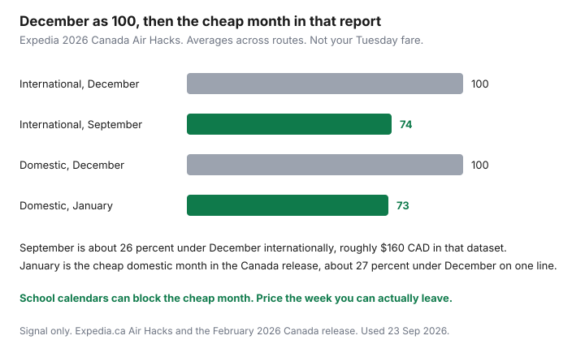

Travel · Canada
Cheapest Months to Travel from Canada: Shoulder-Season Playbook by Trip Type
Households look at March break and Christmas, see the fares, and decide travel is impossible. Those two weeks are the demand spikes. They are not the year. The cheap month depends on whether the trip is domestic, a sun week, Europe, or a park, and on whether a teenager has to be in class.
The numbers in the first section are one company’s 2026 Canada dataset. They are a signal, not a quote for your airport. How far ahead to buy, once the month is chosen, is the booking-window guide. Passports that will fail an entry rule are the renewal checklist, and they outrank a fare alert.
Disclosure: Flight comparison sites and sun-destination package quotes are offer types. Saving Optimizer may earn a commission if we later add partner links. We do not claim an Expedia, airline, or tour-operator partnership. Education only.
Key takeaways
- Expedia’s 2026 Canada figures: January is the cheap domestic month, about 27% below December on one line of that release. September is the cheap international month, about 26% below December, roughly $160 CAD a ticket.
- With teens, September is often blocked. Use late June and late August for a long trip. March break and Christmas are peak, even if the weather looks like a deal.
- Sun discounts in September and October sit inside hurricane season, 1 June–30 November. Price the package and the cancellation wording together.
- Europe’s value months for adults without a school lock are September and October, and May. Parks follow campground dates, not the word “shoulder.” Banff’s sheet has the 2026 clocks.
- Set the fare alert on the dates inside the month, plus or minus about three days. Peak versus off-peak is too coarse.
- One year out: passports, then the week you can leave, then alerts, then a deposit. One trip type a season.
Domestic January vs international September patterns (Expedia 2026 signal as one input)
Expedia’s Canada Air Hacks for 2026, published in February and mirrored on expedia.ca, split the year in a way that matches how Canadian households actually fly. Domestic and international are not the same cheap month.
- International. September is the most affordable month in that dataset, with fares about 26% lower than December, an average saving on the order of $160 CAD a ticket. The Canada release also describes September as the most affordable month to travel in the report overall.
- Domestic. January is the cheapest month to fly domestically, tied to lower demand after the holidays. One line of the Canada release puts January about 27% below December. Another line in the same release contrasts January with November. When a report disagrees with itself about the expensive month, use the part that is stable: January is the cheap domestic month they name. Do not build a budget on which other month they called the peak.

The same report’s booking windows, already used on the companion guide, sit beside the months. Domestic economy was cheapest 31–45 days out, about $185 CAD less than booking 180 or more days out. International economy was cheapest 15–30 days out, about $190 less than six months out, and 31–45 days still beat six months by about $185. A cheap month bought six months early can waste the month. A cheap month bought 20 days out, with a passport still in the mail, can waste the trip.
Thursday as a cheaper international departure day, and Friday as a cheaper domestic departure day, are in that same Canada report. They are a test on your dates, not a reason to move a fixed week of leave. The U.S. edition of Air Hacks does not match the Canada edition (that one talks about August). Use the Canada pages if you are leaving from Canada.
School-constraint calendar for middle-aged households with teens
A middle-aged household with teenagers does not have a blank year. Provincial calendars differ. Boards differ inside a province. Exam weeks in late January and in June show up often and are not universal. Read the board’s PDF. Then mark only the weeks someone can miss without you pretending a chemistry exam is optional.
| Window | Who can use it | Price character |
|---|---|---|
| Late June, just after classes | Households with teens, if exams are done | Edge of summer. Often kinder than mid-July. Not a September fare. |
| Mid-July to early August | Anyone. This is the default, which is why it costs. | Peak for Europe, parks, and many domestic flights. |
| Second half of August | Teens, until the return-to-school date | The other edge. Lodging eases before fares fully do. Do not cut it so close that a delay eats the first day of school. |
| September and October | Adults, or a long weekend if a PD day stacks | Where the international September signal lives. A two-week family trip usually cannot. |
| March break | Whoever the board releases, for about a week | Peak sun demand from Canada. Compare package and do-it-yourself inside that week only. |
| Christmas and New Year | Almost everyone, which is the problem | The expensive pole in the Expedia comparison. Visit family if that is the trip. Do not expect a shoulder fare. |
| January, after the holidays | Domestic trips that survive school. International sun if you can leave. | The domestic cheap month in the Canada release. Sun hotels can still be in their high season. |
Two adults travelling without the teens in October, plus a shorter late-August week as a family, is often cheaper than one July trip for four that tries to be everything. Run that comparison with the per-person sheet before you fall in love with a single departure date. A cheap flight into a week that needs two rooms and a car can lose to a dearer flight into a walkable week. The month does not fix the lodging.
Sun destinations: heat, hurricane, and price trade-offs
Canadian sun demand piles into Christmas through March break, when the weather at home is the sales pitch. July and August are hot on the ground and overlap with school holidays, so they are not a secret bargain either. The price drop shows up when those two crowds thin: May and early June, and September through November.
Heat is the May and June trade. You are travelling before the fiercest summer temperatures at many resorts, and before the heart of the storm season, with the season already open on 1 June. A late-May week can be the overlap you want: school not yet finished for some households, so you may not have the teens, and the hurricane calendar not yet in its most active stretch. Early June is the first week the season is officially open. Read a forecast. Do not read a slogan.
September and October are the discount that needs a spine. They are inside Atlantic hurricane season through 30 November. They are also when teens are back in class, which is why a resort will deal. The Caribbean budget guide is the package-versus-flight math, the resort-credit cap, and the deposit clock. The Mexico guide is the same method for Cancun and the Pacific coast. Use those sheets inside the month you picked here. A September headline that forgets tips, a transfer, and a storm clause is not 26% off.
Aruba, Bonaire, and Curaçao sit south of the typical hurricane track. They are not a guarantee, and Canadian nonstops are thinner, so a cheap room plus a connection can lose. Cuba, the Dominican Republic, and Jamaica are inside the basin. Travel.gc.ca is the trip brief the week you go. Trip cancellation and travel medical are Insurance decisions. Put the premium beside the package. Do not shop the policy in the resort checkbox and call that a shoulder-season strategy.
Europe and domestic parks shoulder windows
Europe from Canada follows the school sort in the Europe playbook. Adults who can leave in September or October should price those months before they price July. Households with teens should price late June and late August before they accept mid-July as fate. May is the spring window if the school year allows it. The transatlantic fare is only the first line: open-jaw airports, rail reservations, and a city’s tourist tax decide whether the cheap month survives contact with the hotel.
Domestic parks do not care that September is good for a flight to Lisbon. They care which campgrounds are open and which road is clear. The Banff and Jasper guide uses the campground calendar: early June after seasonal sites reopen, and September after Labour Day, before the sites you need close. Regular Parks Canada fees apply from 8 September 2026, after the Canada Strong Pass ended on 7 September. A “free admission” memory from earlier in 2026 is not the rate on an autumn gate. Lake Louise parking and the shuttle are separate from admission. The Discovery Pass break-even is a gate-day count at the regular 2026 rate, adult daily $12.25 against $83.50. It is not a lodging discount.
A January domestic fare, the cheap month in the Expedia signal, is a city trip or a visit to family more often than it is a tent. Many mountain campgrounds are closed. Winter can be the right trip. It is a different sheet: daylight, traction, and what is open. Do not paste a July trail plan onto a January airfare and call it shoulder season.
| Trip type | Month to test first | Where the budget is built |
|---|---|---|
| Domestic city or family visit | January, if school allows | Booking window, plus bags |
| Sun, package or do-it-yourself | May–early June, or September–November with a storm read | Caribbean guide or Mexico guide |
| Europe | September–October without teens; late June and late August with teens | Europe playbook, then cpp if you are spending points |
| Banff and Jasper | Early June, or September before campgrounds close | Banff sheet, Discovery Pass only if the gate days say so |
How to use fare alerts inside shoulder months—not just peak vs off-peak
“Off-peak” is a label big enough to hide a long weekend. Alerts work when they are narrow.
- Pick the trip type and the month from the table above. If the only week you have is the last week of December, stop. The alert will not invent September.
- Choose the dates you can travel, then a band of about three days on either side. The booking-window guide uses that band for a reason: a Thursday international departure or a Friday domestic departure is a hypothesis, and the band is how you test it without moving a wedding.
- Set the alert on the airport you will actually use. Add one alternate only if you have already priced the train, the bus, or the drive. A fare into an airport two hours away is not yet a fare.
- Write a ceiling in CAD, all-in, including the bag the fare does not include. When the alert hits the ceiling inside your dates, buy if the passport is already in the house. If it is not, the ceiling can wait.
- If nothing hits, buy inside the window the Canada data liked: 31–45 days for domestic economy, 15–30 days for international, or 31–45 if you will not leave an international trip that late. An alert set in January for a September flight teaches you the price. It is early relative to that window. Do not feel late because you refused to buy in February.
Peak versus off-peak fails because both contain expensive Tuesdays. A September fare on the Saturday of a long weekend can look like August. A January fare on the holiday Monday can look like Christmas. The alert’s job is the date range, not the adjective. Flight-comparison sites are the tool type. This page does not rank them. Whichever one you already check is fine if the alert matches the ceiling you wrote.
Sun packages do not alert the way a seat does. For those, re-run the same room category in the shoulder week and in the week you thought you had to travel, on two operator sites, the week you are willing to deposit. The gap between those two quotes is the month’s value. The Caribbean page’s deposit note still applies: the balance date is on the quote, and a missed balance can cancel the file.
Build a household travel calendar one year out
One page, twelve months, one trip you mean to take and a second only if the first is funded. The point of the year view is to stop four peak-week impulses from spending the same dollars.
- This month. List passport expiry dates and the stricter fail date (three months after a Schengen departure, or whatever travel.gc.ca and the airline require). If NEXUS is in the wallet, the update is in person after the new book arrives, not a someday task. Start the renewal early enough that a 20-business-day clock plus mail still leaves a month to buy the fare.
- Month twelve to month nine. Circle the school or shift weeks from the table. Pick one trip type. Name the shoulder month you will test and the peak month you will not pretend is required.
- If the trip is a park, put the reservation launch on the calendar when Parks Canada publishes it. For the 2026 season the Banff guide records Jasper on 27 January and Banff on 12 February, 8 a.m. MT. Next year, read that year’s list. Do not assume the weekday repeats. A shoulder week with no campsite is a hotel week.
- Inside the shoulder month, on the alert clock above. Watch. Buy when the ceiling or the booking window says so, and only with passports in hand.
- Deposit week. Package balance dates, the FX method if a charge is in U.S. dollars or euros, and a travel-medical premium chosen on the Insurance side. One number for the trip, per person only after the total exists.
- The other eleven months. Leave them alone. A second trip in March break, because the September trip felt thrifty, is how the thrift disappears. If you want a domestic January weekend and a September city trip for two adults, write both now and fund them as two lines, not as surprises.
The calendar is finished when each line has a month, a document status, and a ceiling. It is not finished when it has a destination and a mood. Revisit it when a board publishes next year’s dates, when a passport arrives, and when an alert fires. That is the whole playbook: the cheap month you can use, bought when the fare is actually cheap, after the booklet that lets you board.
Sources & date stamps
- Expedia.ca 2026 Air Hacks and the February 2026 Expedia Canada release — September international about 26% below December, on the order of $160 CAD; January named as the cheapest domestic month, about 27% below December on one line of that release. Booking windows: domestic 31–45 days, international 15–30 days. Used 23 Sep 2026 as one input. The U.S. Air Hacks edition is a different dataset.
- Atlantic hurricane season, 1 June–30 November — U.S. National Hurricane Center basin calendar. Paired here with price months, not used as a forecast for a given week.
- Parks Canada fee timing and the Banff and Jasper guide — regular fees from 8 September 2026; campground windows and 2026 reservation launch dates live on that guide. Discovery Pass adult $83.50 versus Banff daily $12.25 on the pass guide.
- School windows — a household pattern, not a provincial calendar. Use your board’s published dates.
Frequently asked questions
What is the cheapest month to fly from Canada?
It depends on the trip. In Expedia’s 2026 Canada Air Hacks, January is the cheapest month for domestic flights, about 27 percent below December on one line of that release. September is the cheapest month for international trips, about 26 percent below December, on the order of $160 CAD a ticket. Those are averages. Your route and your school calendar can point at a different week.
Can a household with teenagers use the cheap September fares?
Sometimes for a long weekend, rarely for two weeks. September is when many Canadian high schools are in session. The usable shoulder for a longer trip with teens is the edge of summer, late June and late August, plus the short breaks your board actually publishes. March break and Christmas are peak prices, not secret shoulders.
Are cheap Caribbean months worth it?
May, early June, and September through November often price below Christmas-to-March-break. September through November also sit inside Atlantic hurricane season, 1 June to 30 November. Heat, storm risk, and the cancellation wording belong in the same decision as the fare. The Caribbean guide walks the package math. Travel medical stays on the Insurance guide.
When should I set a fare alert?
Inside the month you can travel, on the dates plus or minus about three days, not on a vague off-peak label. Expedia’s 2026 Canada data put the cheapest international booking window at 15 to 30 days out and domestic at 31 to 45 days. An alert six months ahead is a price education. Buy when the fare hits a ceiling you wrote down, or inside that window, whichever you can still use after passports are in hand.
What goes on a one-year travel calendar?
Passport fail dates and NEXUS updates first, then the school or work weeks you can actually leave, then park reservation launch mornings if the trip is Banff or Jasper, then the fare alert inside the shoulder month, then the deposit only after the passport you will travel on has arrived. One trip type per season beats four peak weeks you cannot afford.